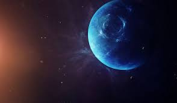

Neptun er en planet
Neptun er den ytterste planeten i solsystemet og befinner seg cirka 30 ganger lenger ute i rommet enn jordas avstand fra sola.
Ett år på Neptun varer i 164 år, men én dag varer i bare 12 (ved polene) til 18 timer (ved ekvator), alt etter hvor på Neptun du befinner deg. Neptun har 3,8 ganger større diameter enn jorda og mer enn 17 ganger jordas masse. Planeten er ganske lik i størrelse som Uranus, men har noe mer masse. I likhet med Uranus består Neptun av is og gass. Disse to planetene kalles derfor for isgigantene for å skille dem fra gassgigantene Jupiter og Saturn. Isen som Neptun består av er hovedsaklig ammoniakk, metan og vann. Gassene er hydrogen og helium. Under lagene med is og gass er det en fast kjerne av metall.